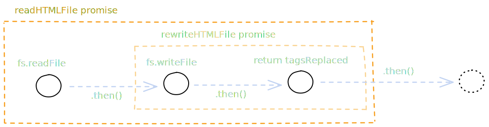

This page is meant to help you write more legible Promise based code and
to help you do more complex promise based tasks. Like all things in this
class, it boils down too functions. Functions aren't just a tool for
code reuse, they give a name to a block of code
1. Multiple Independent Promises
One of the beautiful parts of JavaScript is that the hard problem of
scheduling multiple things at once are not your problem. JavaScript
delegates long running tasks to the Operating System (OS) through
asynchronous functions from the JavaScript environment.
On the
previous page
we went through an example where we synchronized two promises:
First, we tried to read a file using fs.readFile()
Then we printed out the contents in a separate .then()
This is an example of two dependent promises. The first
promise is rersponsible for reading the file and the second is
responsible for printing the contents. You cannot print out the
contents without first reading the file. We use
.then() to make sure the execution happens in ordere.
But what if we don't care about the order of Promises, we just want
too knowo when all the Promises are done. Let's consider the case of
reading a directory of HTML files and replacing every
<i> tag with <em>. To accomplish
this task, we could:
Read the directory of HTML files using fs.readdir()
Loop through each file in the directory
Verify the file is an HTML file (maybe by using the file
extension).
Read the contents of each HTML file.
Find and replace each <i>
Write each file with the replaced tags
After everything is done, print out the number of times in each
file a replacement was made sorted from most to least.
Before jumping into code, let's see which steps depend on each other.
1 must
be finished before anythinig else happens. So all steps from 2 onwards
must happen in the chain of Promises following 1.
Each file is independent. We don't need to wait for the first file to
finish writing to start working on the second file. Each file is doing
its own thing. But the reading, replacement, and writing of a single
file must all happene in sequence. Printing the number of replacements
must be done after all Promises are done because we have to
sort them.
// Read the directory of HTML files using fs.readdir()
const fs = require('fs/promises')
const directory = 'not-semantically-correct-html-files'
fs.readdir(directory)
.then(fileNames => {
// do something with files.
}).catch(err => {
if (err.code === "ENOENT") {
console.log(`${directory} could nto be found`)
} else {
console.log('An error occurred', err)
}
})
With our very succinctly named directory, we call
fs.readdir. I've added a .catch() so you can
see an example of error handling. I also used an arrow function just
for brevity.
// Loop through each file in the directory AND
// verify the file is an HTML file
fs.readdir(directory).then(fileNames => {
const htmlFiles = [];
for (const name of fileNames) {
if (name.endsWith('.html')) {
htmlFiles.push(name)
}
}
})
// catch() is over here
This is some nice synchronous code. I like to make a lt of new
variables because they let me update the names of things as I go. If
you're worried about performance of creating a new array, remember
that this probably takes nanoseconds to execute. Your CPU can spare a
few cycles to make the code easier to read.
// Read the contents of each HTML file.
fs.readdir(directory).then(fileNames => {
const htmlFiles = [];
for (const name of fileNames) {
if (name.endsWith('.html')) {
htmlFiles.push(name)
}
}
for (const htmlFile of htmlFiles) {
fs.readFile(htmlFile)
}
})
// catch() is over here
You might have previously returned after the fs.readFile,
but we won't be doing that. If we returned inside this loop, we would
only read the firstt file. Our next step here is to wait for the file
to finish being read and once we have the contents, we can replace and
then write out the new contents.
// Find and replace each <i>
// Write each file with the replaced tags
fs.readdir(directory).then(fileNames => {
const htmlFiles = [];
for (const name of fileNames) {
if (name.endsWith('.html')) {
htmlFiles.push(name)
}
}
for (const htmlFile of htmlFiles) {
const readHTMLFile = fs.readFile(htmlFile).then(fileContents => {
// don't worry too much about the logic in here, focus on the Promises
let tagsReplaced = fileContents.split('<i>').length;
const replacedContents = fileContents
.replaceAll('<i>', '<em>')
.replaceAll('</i>','</em>')
const rewriteHTMLFile = fs.writeFile(htmlFile, replacedContents)
.then(() => {
return tagsReplaced;
})
return rewriteHTMLFile
})
}
})
// catch() is over here
Now our function is getting complex. I assigned each Promise to a
variable. Even though variables may be unused, it'll help us keep
track of Promises.
Once the OS has finished readHTMLFilethen JavaScript will count and replace all the tags,
synchronously. After that, JavaScript tells the OS to execute the
rewriteHTMLFile Promise. Once the OS has written the
file, then the tagsReplaced are returned.
Here are some questions for you to think about. You can click on them
to reveal my answer.
Why not return tagsReplaced instead of the
rewriteHTMLFile Promise?
The value of tagsReplaced is available, but we want
our program to finish successfully writing the files
before any other Promise uses the tagsReplaced.
What if one of the files fails to write? We need to communicate
that.
What will be the input type to the callback of another
.then to the readHTMLFile Promise?
Since the first .then returns the
rewriteHTMLFilePromise. So adding another
.then will get the return value of
rewriteHTMLFile The return value of the
rewriteHTMLFilewill be whatever is returned from
the .then attached to the
fs.writeFile call. What's returned from that call?
tagsReplaced
which is a number.
Sorry if this isn't super clear to read, it is a first draft,
hopefully the diagram below helps.
This is all just a roundabout way of saying that Promises return
whatever is in the final.then in the
chain of Promises

Does the readDirectory Promise return anything?
It currently returns undefined, as a Promise. So you can still
use a
.then to synchronize additinal Promises, but it
doesn't currently output a value.
Will another listener ever be able to access the value of
fs.readFile(htmlFile)?
Not as it's written here. Because we don't assign
fs.readFile to a variable, the value of that
Promise cannot be accessed. Anyone who tries to add a
.then to the readHTMLFile Promise can
ONLY ever retrieve the last value in the chain.
// After everything is done, print out the number of times in each
// file a replacement was made sorted from most to least.
fs.readdir(directory).then(fileNames => {
const htmlFiles = [];
for (const name of fileNames) {
if (name.endsWith('.html')) {
htmlFiles.push(name)
}
}
const readFilePromises = [];
for (const htmlFile of htmlFiles) {
const readHTMLFile = fs.readFile(htmlFile).then(fileContents => {
let tagsReplaced = fileContents.split('<i>').length;
const replacedContents = fileContents
.replaceAll('<i>', '<em>')
.replaceAll('</i>','</em>')
const rewriteHTMLFile = fs.writeFile(htmlFile, replacedContents)
.then(() => {
return { tagsReplaced, fileName: htmlFile };
})
return rewriteHTMLFile
});
readFilePromises.push(readHTMLFile)
}
return Promise.allSettled(readFilePromises)
}).then(replacements => {
console.log("Replacements", typeof replacements, replacements)
replacements.filter((replacement) => {
replacement.status === "fulfilled"
}).sort((a, b) => {
return a.tagsReplaced - b.tagsReplaced
});
for (const r of replacements) {
console.log(`${r.filename} - ${r.tagsReplaced}`)
}
});
// catch() is over here
The main change we've made is to add
Promise.allSettled. Promise.allSettled takes in an array of Promises and
returns a Promise that returns after all of tthe given
promises have either fulfilled or rejected. The next
.then after a Promise.allSettled will
receive a Promise describing the outcome of each of the given
Promises. In our case, we pass in readFilePromises. The
replacements parameter will be the return value from the
readHTMLFile Promise which has been changed to an Object
containing the file name and the number of replacements.
Promise.allSettled adds a status property to
each Promise which will either be the string
"fulfilled" or "rejected". Use this property
filter out any "rejected" promises using the
Array.filter
method. Then use
Array.sort
to sort them and finally we can print them out.
2. Cleaning Up Promise Code
In the above code, there are 8 places where a Promise is created.
fs.readdir
fs.readdir.then()
readHTMLFile
readHTMLFile.then()
fs.writeFile
fs.writeFile.then
Promise.all
fs.readdir.then().then()
Some of them are explicitly declared, others are not. As much as it's
important that a computer can understand your code, it's more
important for humans to be able to understand your code.
Code is meant for reading, not writing . So make sure
your code is readable. How do we make this code more digestible?
There's one simple trick, use functions. Functions are not only a way
to reuse code, they help you name code.
const filterHTMLFiles = function (allFilesInDirectory) {
const htmlFiles = [];
for (const fileNames of allFilesInDirectory) {
if (fileNames.endsWith(".html")) {
htmlFiles.push(fileNames);
}
}
return htmlFiles;
};
const replaceTags = function (htmlFiles) {
const readFilePromises = [];
for (const htmlFile of htmlFiles) {
let tagsReplaced = fileContents.split("<i>").length;
const replacedContents = fileContents
.replaceAll("<i>", "<em>")
.replaceAll("</i>", "</em>");
const rewriteHTMLFile = fs
.writeFile(htmlFile, replacedContents)
.then(() => {
return { tagsReplaced, fileName: htmlFile };
});
readFilePromises.push(rewriteHTMLFile);
}
return Promise.allSettled(readFilePromises);
};
const printReplacements = function (replacements) {
console.log("Replacements", typeof replacements, replacements);
replacements
.filter((replacement) => {
replacement.status === "fulfilled";
})
.sort((a, b) => {
return a.tagsReplaced - b.tagsReplaced;
});
for (const r of replacements) {
console.log(`${r.filename} - ${r.tagsReplaced}`);
}
};
// this is where we synchronize all our promises
fs.readdir(directory)
.then(filterHTMLFiles)
.then(replaceTags)
.then(printReplacements);
Why is this code a bit more readable? We have distinct places to look
for bugs. Each function is separate from any other. We can verify that
the printReplacements function works without testing the
replaceTags. And most of all, the synchronization of
Promises is separate from the logic. Each function may or may not
return a Promise, but by wrapping the execution of the callback
function in .then(), we guarantee each function becomes
asynchronous. That's one less point of variability in our function, we
don't have to worry about whether code will be synchronous or
asynchronous.
3. Racing Promises
In some cases, you may want to have multiple Promises race against
each other. You want to know when at least one of the Promises is
either fulfilled or rejected. This
will not cancel any of the Promises. This technique
will only be useful for the program listening. If you're make 2
requests to a server and want only one of them to execute, this is not
the correct pattern. You'll want to synchronize the two Promises.
Once a Promise is started, it cannot be cancelled .
There are libraries that will help you ignore values, but remember
that HTTP is stateless so any two requests are not dependent on each
other. So what food is this pattern if you can't tell a server to
cancel a request?
Let's think about loading states. On a web page, humans will think a
web page is fast if any user action gets a response within 100ms. But what happens if you request some data from a server but it
takes more than 100ms? You still want to show something, and that
something is often a loading state. We won't get into what loading
states should look like, but we can get into how to race loading
states. Because if the server responsds within 100ms, then you
probably don't want to show a loading state.
So one of the problems that racing Promises can help you solve is to
only display a loading state if an operation (in this case, making a
request to a server) is slow.
This code has a lot of things that are just glossed over, namely the
mechanics of each function. But we use
Promise.race to set the contents to winner of the race.
Since race will always resolve regardless of if the winning Promise
fulfills or rejects, we don't nede to have a .catch().
Because we don't want to show a loading spinner forever. We will queue
up the getElementContents for whenever it's ready. This is safe to do
twice because once a promise fulfills or rejects, the value will never
change.
Promise.race does have a sibling called
Promise.any
which only resolves once on of the given Promises fulfills,
so it waits until one of the requests succeeds. If your Promises only
every fulfill or you want to make code wait for the first
successful response then Promise.any is more
suitable.